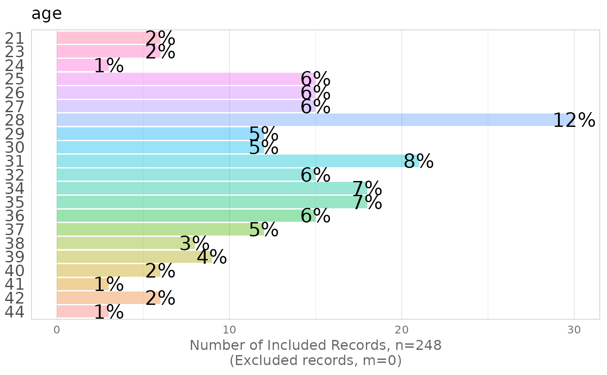

Our consulting company, Melinae, frequently assists clients with large datasets consisting of many variables of varying quality. Before we can develop sophisticated statistical models to provide our client with insight and a competitive advantage, we first learn the characteristics of their existing datasets. This package provides tools that assist our initial exploration of real-world datasets. Although these tools are not a substitute of thoughtful inspection in our later analyses, these make the exploration more time efficient. These tools allow us to more quickly start developing innovative solutions and delivering results.
The idea behind this package is that configuring metadata is quicker and more robust than coding the same repetitive code. We need to write more as the package takes shape.
Thanks, the Melinae Analytics Team
Note
Our company has benefited from many tools developed by the community, and we'd like to contribute back.
Suggestions, criticisms, and code contributions are welcome. If any developer is interested in trying a direction
that suits them better, we'll be happy to explain the package's internals and help you fork your own version. We have
some starting material described in the ./documentation_for_developers/ directory. The repository is currently
hosted at our GitHub server.
If your organization is interested in the consulting services of Melinae, please contact Jim Quallen at (what material belongs here)?
Is there anything else someone would like to include?
#TODO: this line needs to be adapted when we move to GitHub. For those interested in use the development version of
TabularManifest, run
remotes::install_github("Melinae/TabularManifest")
Examples
create_manifest_explore_univariate(datasets::InsectSprays, write_to_disk=FALSE)
#> variable_name remark class should_graph graph_function x_label_format
#> 1 count numeric TRUE histogram_continuous scales::comma
#> 2 spray factor TRUE histogram_discrete scales::comma
#> bin_width bin_start rounding_digits
#> 1 1 0 1
#> 2 1 1 1
if( require(grDevices) ) {
histogram_continuous(d_observed=beaver1, variable_name="temp", bin_width=.1)
histogram_discrete(d_observed=infert, variable_name="age")
}
